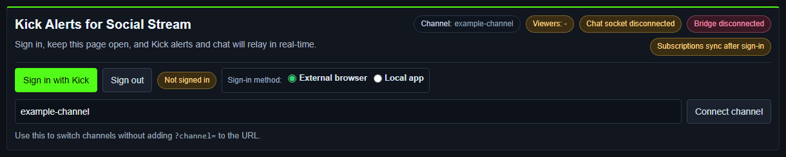

Elige un modo de fuente de Kick
| Modo | Ideal para | Inicio de sesión |
|---|---|---|
| Standard | Leer el chat visible de Kick desde la página normal o la ventana emergente de chat. | Normalmente no hace falta para capturar el chat público. La página debe cargar y mostrar el chat. |
| WebSocket | Chat estructurado y eventos oficiales de seguimiento, suscripción, recompensas, KICKs, moderación y estado del directo. | El chat público puede conectarse por separado, pero OAuth es necesario para suscribirse a eventos oficiales, enviar mensajes y usar controles del canal o de moderación. |
Usa el identificador de la URL, no el nombre visible
Para https://kick.com/example-channel, el valor de la fuente es example-channel. Puedes pegar la URL completa o introducir solo ese identificador.
Los nombres visibles de Kick pueden ser distintos de sus identificadores en las URL. Un nombre visible puede contener guiones bajos mientras la URL usa guiones. Copia el identificador de la barra de direcciones en lugar de volver a escribir el nombre mostrado.
Configuración de la aplicación de escritorio
- Selecciona Añadir fuente → Kick.
- Pega la URL completa del canal de Kick o introduce su identificador de URL.
- Deja WebSocket seleccionado para alertas estructuradas. Actualmente Kick usa WebSocket de forma predeterminada en la aplicación.
- Selecciona Activar fuente (Activate source).
- En la ventana de la fuente de Kick, selecciona Iniciar sesión con Kick (Sign in with Kick) y aprueba los permisos solicitados.
- Mantén la ventana de la fuente abierta y revisa los indicadores de estado Canal, Socket de chat, Puente y Suscripciones (Channel, Chat socket, Bridge y Subscriptions).

Configuración de WebSocket en la extensión del navegador
- Instala y activa la versión actual de la extensión Social Stream Ninja.
- Abre: página de fuente WebSocket de Kick.
- Sustituye
example-channelcon el identificador exacto del canal en la URL. - Selecciona Conectar canal (Connect channel) si la página no se ha conectado automáticamente.
- Selecciona Iniciar sesión con Kick (Sign in with Kick) para activar las suscripciones a eventos oficiales y los controles de la cuenta.
- Mantén la página abierta durante el directo.
https://socialstream.ninja/sources/websocket/kick.html?channel=CHANNEL_SLUGPara la captura Standard, abre https://kick.com/CHANNEL_SLUG o su ventana emergente de chat y deja el chat visible.
Qué solicita el inicio de sesión actual de Kick
| Grupo de permisos | Se usa para |
|---|---|
| Lectura de usuario y canal | Obtener el usuario conectado, el canal, la categoría y la información actual del canal. |
| Escritura del canal | Actualizar el título o la categoría del directo desde Controles avanzados (Advanced Controls). |
| Recompensas | Leer información de recompensas del canal y normalizar sus canjes. |
| Escritura en el chat | Enviar mensajes como emisor o bot desde la fuente. |
| Suscripciones a eventos | Suscribirse a eventos oficiales de Kick en tiempo real. |
| Moderación | Bloquear o desbloquear usuarios y gestionar mensajes de chat cuando la cuenta tenga permiso. |
| KICKs | Leer información de apoyo relacionada con KICKs. |
El flujo OAuth actual de Kick usa inicio de sesión con código de autorización y PKCE. No pegues tokens de acceso, tokens de actualización, secretos de cliente ni cookies del navegador en una guía, un chat o una solicitud de soporte.
Referencias oficiales: OAuth 2.1, ámbitos de permisos, y la referencia de la API de Kick.
Eventos oficiales a los que se suscribe la fuente actual
- Chat:
chat.message.sent. - Seguimientos:
channel.followed→ Social Streamnew_follower. - Suscripciones: nuevas, renovaciones y regalos →
new_subscriber,resub, ysubscription_gift. - Recompensas:
channel.reward.redemption.updated→reward. - Regalos de KICKs:
kicks.gifted→donationcon la cantidad de KICKs. - Moderación:
moderation.banned. - Estado del directo:
livestream.status.updated→stream_onlineostream_offline.
Nota sobre raid/host: La lista oficial actual de webhooks de Kick no publica un evento de raid/host. Social Stream puede procesarlo si Kick lo ofrece mediante una fuente conectada, pero no se debe dar por garantizada una alerta de raid de Kick.
Consulta la documentación oficial actual de Kick sobre la lista de eventos de webhook y, en la documentación de Social Stream, la guía de compatibilidad de eventos y alertas.
Solucionar una fuente de Kick que no conecta
- Copia el identificador exacto del canal de la URL de Kick.
- Comprueba que Canal (Channel) muestre el identificador previsto y Socket de chat (Chat socket) deje de indicar desconectado.
- Si el chat funciona pero las alertas oficiales no, vuelve a iniciar sesión y espera a que Puente (Bridge) y Suscripciones (Subscriptions) se conecten.
- Si falla el inicio de sesión integrado o el CAPTCHA, usa Navegador externo (External browser) en la aplicación de escritorio.
- Comprueba que la cuenta conectada sea propietaria del canal o pueda moderarlo antes de probar los controles de envío o moderación.
- Revisa el dock de Social Stream antes de investigar OBS. Si el dock recibe datos de Kick, el problema restante está en el overlay o en la URL de OBS.